数据结构与算法
数据结构与算法整理
第一章 导论
- 数据结构概念
- A data structure is a data object together with the relationships among the data members that compose the object
- Data Structure = {D，R}，D为数据，R为所有数据间的关系
- 抽象数据结构ADT：数据 + 对应操作
- 线性结构
- 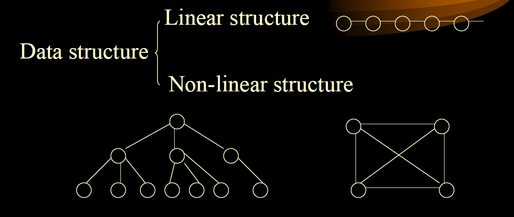
- 算法
- an operation sequence of solving a problem
- 递归
- 递归的两条基本规则: (1) Base cases (2) Making progress
- 直接递归：函数或过程直接调用自身。
- 间接递归：函数或过程调用其他函数，而这些其他函数中又调用原始函数，最终形成一个递归循环。
- 泛型
- 泛型（Generic）是一种编程范式，它允许在编写代码时使用一种抽象的方式来操作数据类型。
第二章 算法分析
空间复杂度
用来衡量算法在执行过程中所需存储空间的度量。它表示算法的额外空间需求与输入规模之间的关系。
组成部分
- 指令空间
- 数据空间
- 运行环境栈空间
分类
- 固定部分：指令、简单变量、定长复合变量、常量
- 可变部分：复合变量、动态分配空间、递归栈
例子
1
2
3
4
5
6public static int SequentialSearch(int [] a, int x){
int i;
for(i=0; i<a.length &&a[i]!=x; i++) ;
if(i= = a.length) return 1;
return i;
}- 数据空间：12 bytes : x，i，a[i]，0，1，a.length
1
2
3
4
5
6public static int sum(float[] a, int n){
if(n > 0){
return sum(a, n - 1) + a[n - 1];
}
return 0;
}- 递归栈空间：（参数 + 返回地址）* 递归深度
时间复杂度
用来衡量算法执行时间随输入规模增长而变化的度量，描述的是随着输入规模的增大，算法的运行时间将如何增长。
最优、最差与平均复杂度：平均复杂度一般难以计算，因此多用最差和最优情况分析
计算
- 统计基本操作的执行次数： 首先，确定算法中的基本操作，例如赋值、比较、循环迭代等。然后，统计这些基本操作的执行次数，以及它们与输入规模的关系。
- 忽略常数项： 在计算时间复杂度时，通常会忽略常数项，即忽略执行次数中与输入规模无关的常数因子。这是因为在大规模输入时，常数项对总体复杂度的增长影响较小。
- 关注主导因子： 确定算法执行步骤中占主导地位的因子，即最大影响复杂度增长的部分。通常，我们关注循环中执行次数最多的部分或递归算法的递归关系。
秩排序
1
2
3
4
5
6
7
8
9
10
11
12
13
14
15
16
17
18
19
20
21
22
23
24
25
26
27public class RankSort {
// Rank the elements in the array a[0:n-1] and store ranks in the array r
public static void rank(int[] a, int n, int[] r) {
for (int i = 0; i < n; i++) {
r[i] = 0;
}
for (int i = 1; i < n; i++) {
for (int j = 0; j < i; j++) {
if (a[j] <= a[i]) {
r[i]++;
} else {
r[j]++;
}
}
}
}
public static void rearrange(int[] a, int n, int[] r) {
for (int i = 0; i < n; i++) {
while (r[i] != i) {
int t = r[i];
swap(a[i], a[t]);
swap(r[i], r[t]);
}
}
}
}数据比较：n * (n - 1) / 2
元素交换次数：2 * n（每次循环中至少有一个元素的秩被正确放置，故不超过n次）
注意点
- 在计算数据移动次数时，一次swap需要移动元素3次
- 循环里的变量初始赋值以及循环条件里的赋值也各算一次移动，当存在多重循环时需要考虑（一般只考虑循环体里的赋值）
大O表示法
- 定义：对于一个函数 f(n)，如果存在正常数 c 和正整数 n0，使得对于所有的 n > n0，都有 f(n) <= c * g(n)，其中 g(n) 是某个已知函数，那么我们就说 f(n) 的渐近上界是 O(g(n))，记作 f(n) = O(g(n))。
- Ω表示法：渐近下界
- θ表示法：介于中间
折半查找
1
2
3
4
5
6
7
8
9
10
11
12
13
14
15
16
17
18
19
20
21
22
23
24
25public static int binarySearch(int[] array, int target) {
int left = 0;
int right = array.length - 1;
while (left <= right) {
int mid = left + (right - left) / 2;
// 如果目标值等于中间值，找到目标值
if (array[mid] == target) {
return mid;
}
// 如果目标值小于中间值，在左侧继续查找
if (target < array[mid]) {
right = mid - 1;
}
// 如果目标值大于中间值，在右侧继续查找
else {
left = mid + 1;
}
}
// 如果未找到目标值，返回 -1
return -1;
}选择排序
1
2
3
4
5
6public static void SelectionSort(int[] a, int n){//sort a[0:n-1]
for(int size = n; size > 1; size --){
int j = Max(a,size);//寻找a[0 : size - 1]中的最大值,O(n)
swap(a[j],a[size-1]);
}
}- Max数据比较次数：n * (n - 1) / 2
- 数据交换次数：3 * (n - 1)
冒泡排序
1
2
3
4
5
6
7public static void BubbleSort(int[] a, int n){//sort a[0:n-1]
for(int i = n; i > 1; i--){
for(int j = 0, j < i - 1, j++){
if(a[j] > a[j+1])swap(a[j],a[j+1]);
}
}
}- 数据比较次数和选择排序一样
插入排序
1
2
3
4
5
6
7
8void insert_sort(int arr[],int len){
for (int i = 1; i < len; i++) {
for (int j = i-1; j >= 0; j--) {
if(arr[j+1]<arr[j]){swap(&arr[j],&arr[j+1]);}
else{break;}
}
}
}
第三章 线性表
定义
L = (e1, e2, ···, en), size 为n，n = 0 -> 空表
操作：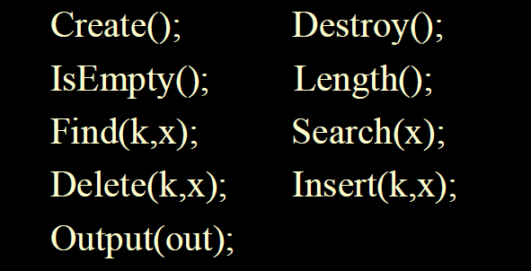
数组实现的线性表
- 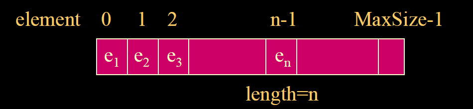
- search(x) ：O(length)
- remove( k,x)：O(n)
- insert (x , i)：O(n)
- 缺点：插入和删除时间长
单链表实现的线性表
- 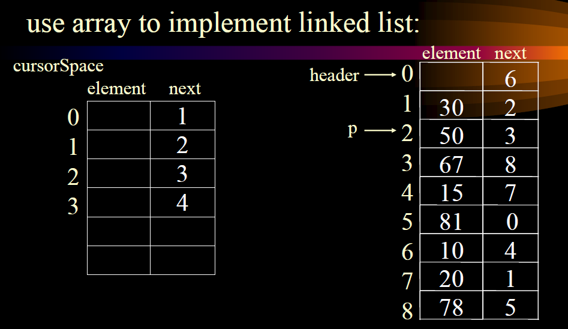
- 操作方法和链表一样
单链表操作
- 删除：
- 若为头节点直接将head指针指向下一个节点
- 将下一个节点的值复制到当前节点，覆盖当前节点的值。
- 将当前节点的 next 指针指向下一个节点的下一个节点。
- 插入
- 创建一个新节点，将新节点的next指针指向目标节点的下一个节点。
- 将目标节点的 next指针指向新节点。
- 交换
- 设有abcd四个节点
- 先让a指向c，再让b指向d，最后再让c指向b（b有额外指针，即已知）
- 单链表类
- ListNode：链表结点类
- LinkedList：链表本身的类isEmpty()、makeEmpty()、zeroth()、first()、find(object x)、remove()、insert(Object x, LinkedListItr p)、findprevious(Object x)
- LinkedListItr：一个迭代器（类比读卡器），用来读取链表节点isPastEnd()、retrieve()、advance()
- 删除：
带表头结点的单链表
- 头结点是链表的第一个结点，但不存储实际的数据。它的存在使得链表的插入、删除等操作在任何位置都可以统一为一种操作，无需特殊处理头结点。
- 空链表表示为头结点的 next 指针为 null
链表的数组实现
基数排序
- 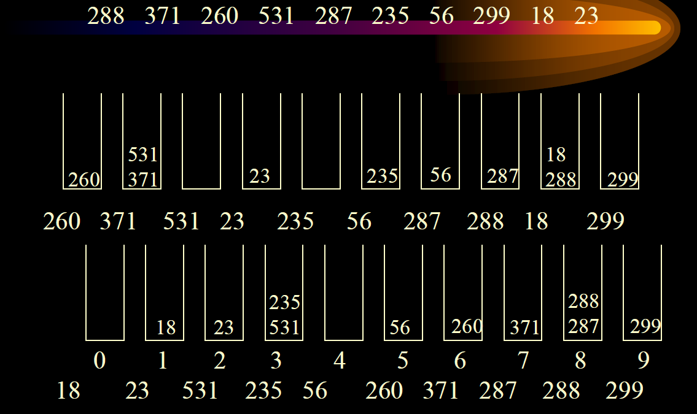
- 按从低位到高位依次放入桶中，n（最高位数）次后排序完成
- 实现：原始要排序的数据、桶中的数据都可以用链表或数组来实现。
栈 stack
- 定义
- 插入和删除都在同一侧的线性表
- 末端叫top，另一端叫bottom
- 方法
- 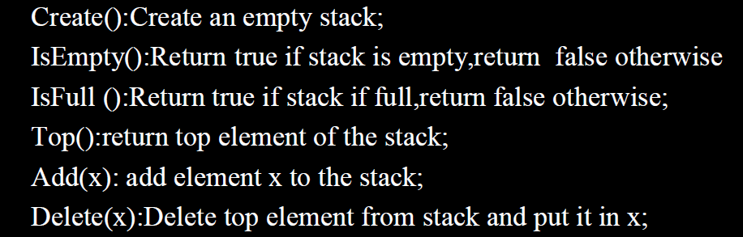
- pop()：出栈
- push()：入栈
队列 queue
- 定义
- 插入和删除在两端的线性表
- 也叫先进先出列表
- 新元素进入的端叫rear，旧元素出队的端叫front
- 方法
- 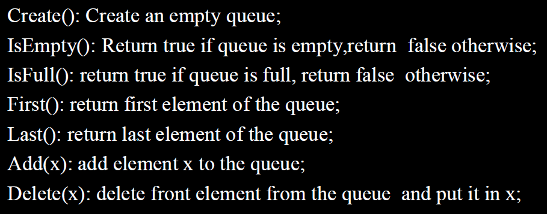
- 数组实现：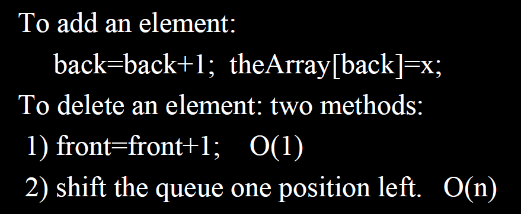
- enqueue()：入队
- dequeue()：出队
第四章 树
- 定义
- 节点的集合，由一个根节点和若干子树构成
- 节点的度degree：孩子的个数
- 树的度：节点度的最大值
- 枝和叶：度为0的节点称为叶，度数不为0的节点称为枝
- 级level：根的级为0/1，其他节点的级为父节点的级+1
- 树的深度/高度：最大的级
二叉树
二叉树
- 定义：有根节点且其余每个节点构成两棵子树，称为左子树和右子树
- 定理
- 二叉树的边数 = 节点数 - 1
- 第i层的节点数最多为2 ^ i
- 高度为h的二叉树节点个数：h + 1 到 2 ^ (h + 1) - 1
- 叶节点数量 = 度为2节点个数 + 1
- 有n个节点的树高度范围：n - 1 到 log2(n + 1) - 1
- 满二叉树：高度为h且有2 ^ (h + 1) - 1个节点的树
- 完全二叉树：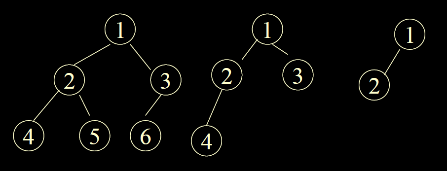
- 数组实现：二叉树被看作完全二叉树缺失了部分节点，完全二叉树按顺序填入数组
- 链表实现：节点结构为数据 + 左子树 + 右子树
- cursor实现：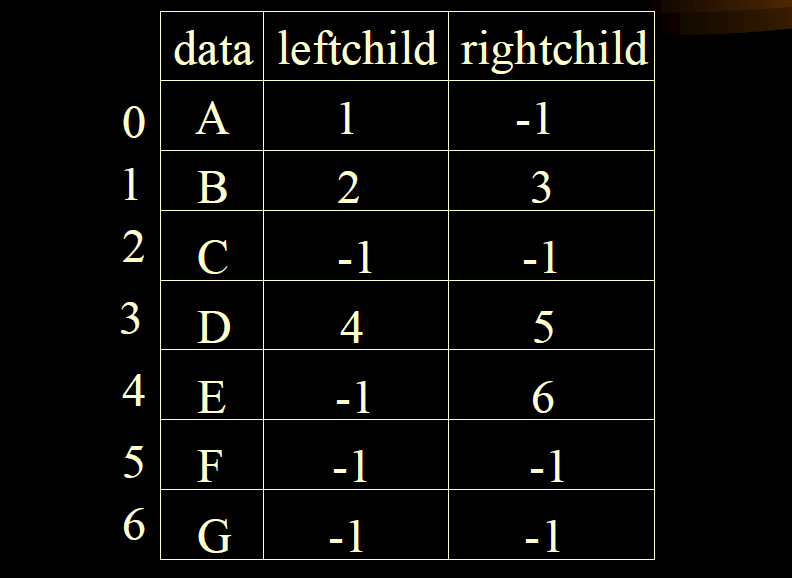
- 方法：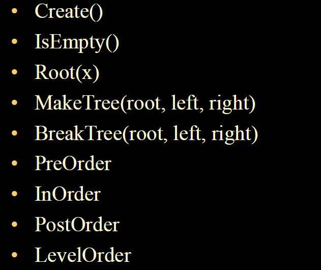
二叉树的遍历
- 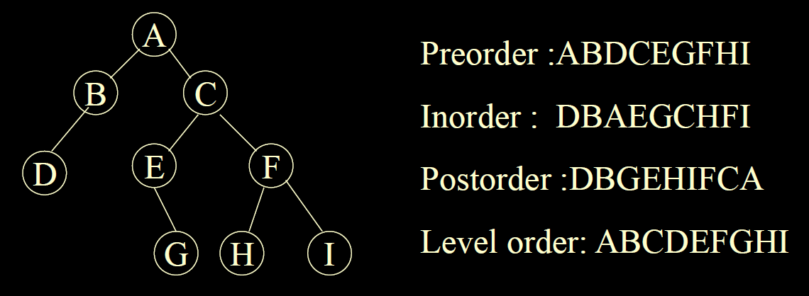
前序遍历：根->左子树->右子树
中序遍历：左子树->根->右子树
后序遍历：左子树->右子树->根
1
2
3
4
5
6
7
8
9
10
11//Preorder traversal递归写法
template<class T>
void PreOrder(BinaryNode<T>* t){
// preorder traversal of *t.
if(t){
visit(t);
PreOrder(t->Left);
PreOrder(t->Right);
//InOrder和PostOrder只需要换顺序
}
}方法：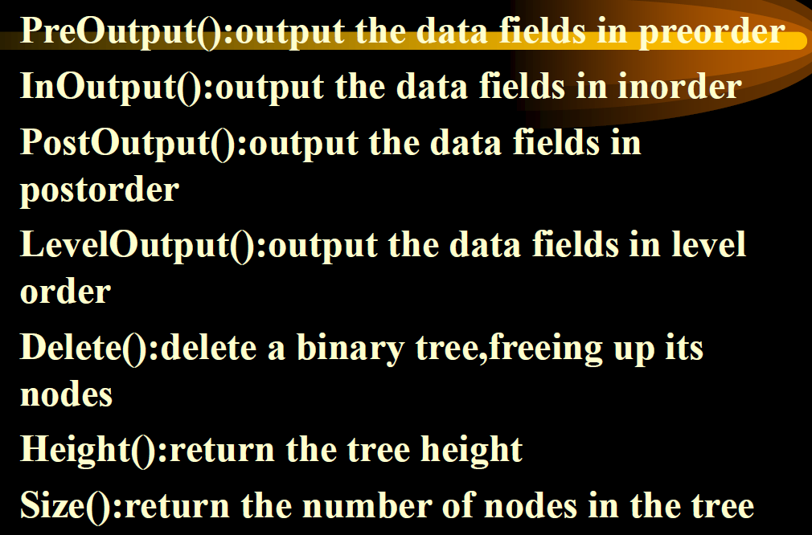
用遍历结果建树
- 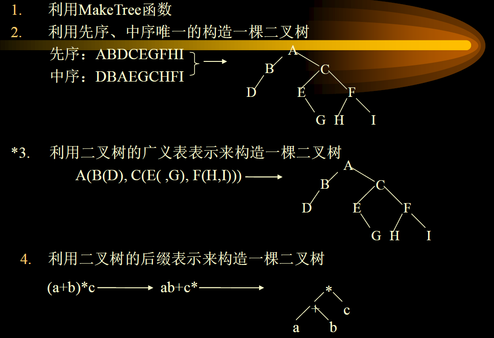
void CreateBT(String pres, String ins, BinaryNode
* & t){
int inpos;
String prestemp, instemp;if (pres.length() == 0) t = NULL; else { t = new BinaryNode; t->element = pres.ch[0]; inpos = 0; while (ins.ch[inpos] != t->element)inpos++; //对左子树建树 prestemp = pres(1, inpos); instemp = ins(0, inpos-1); CreateBT(prestemp, instemp, t->left); //对右子树建树 prestemp = pres(inpos + 1, pres.length() - 1); instemp = ins(inpos + 1, pres.length() - 1); CreateBT(prestemp, instemp, t->right); }}
1
2
3
4
5
6
7
8
9
10
11
- 如果为后序+中序：建根节点时和移动inpos时注意后序最后一个元素为根,递归部分如下：
````c++
posttemp = posts(0, inpos - 1);
instemp = ins(0, inpos - 1);
CreateBT(posttemp, instemp, t->left);
posttemp = posts(inpos, posts.length() - 2);
instemp = ins(inpos + 1, ins.length() - 1);
CreateBT(posttemp, instemp, t->right);
树与森林
- 树的存储方式
- 左子女右兄弟表示法（重点）
- 每个节点除了存储自己的信息外，还存储了其最左边的子节点和最靠近的右兄弟节点的指针。
TreeNode *firstchild, *nextsibling;
- 双亲表示法：在树节点中存储父节点的位置
- 广义表（基本不考）：如a(b(f,g),c,d(h,i,j),e)
- 左子女右兄弟表示法（重点）
- 森林
- 若干树的集合
- 森林->树：先将树全部转成二叉树，再将树的根节点用右链相连
- 树->森林：依次剪断根节点和右子树，形成新的树
- 把一棵树转化为二叉树：从这棵树的根结点开始，从上到下，看每一个结点，把你正在看的结点的孩子放在左子树，兄弟放在右子树。（将节点的孩子放在左子树，将节点的兄弟放在右子树）
- 树的遍历
- 深度优先遍历
- 先序次序遍历：先访问树的根，再按先序遍历根的第一棵子树，第二棵子树，……
- 后序次序遍历：按先序遍历根的第一棵子树，第二棵子树，……，最后访问树的根
- 广度优先遍历
- 分层访问
- 森林的遍历：先把森林转化成二叉树，再进行树的遍历
- 深度优先遍历
特殊的树
线索树
n个结点的二叉树有2n个链域，其中真正有用的是n - 1 个，其它 n + 1 个都是空域。为了充分利用结点中的空域，使得对某些运算更快，用这些空域存储额外的信息
一个节点内增加两个标记：左子女|左线索|数据|右线索|右子女
若左线索为0，左子女指针正常指向左子女；若左线索为1，左子女指向前驱（某线性序列）
若右线索为0，右子女指针正常指向右子女；若右线索为1，右子女指向后继
中序线索树节点A的前驱为A左子树中的最右节点或者A的某个右子树包含A的祖先节点
中序线索树节点A的后继为A的右子树中的最左节点，或者是A的某个左子树包含A的祖先节点
注：这里的左右看的是垂直位置
1
如： / \ 中从左到右为2->1->3
2 3
1
2
3
4
5
6
7
8
9
10
11
12
13
14
15
16
17
18
19
20
21
22
23public class ThreadedTree {
private static ThreadedTreeNode prev;
public static void createThreadedTree(ThreadedTreeNode root) {
if (root != null) {
createThreadedTree(root.left);
//左子女为空填前驱
if (root.left == null) {
root.left = prev;
root.leftThread = true;
}
//pre右子女为空填当前节点
if (prev != null && prev.right == null) {
prev.right = root;
prev.rightThread = true;
}
prev = root;//更新前驱
createThreadedTree(root.right);
}
}
}霍夫曼树
- 增长树：对原二叉树中度为1的结点，增加一个空树叶；对原二叉树中的树叶，增加两个空树叶
- 外通路长度(外路径)E：根到每个外结点(增长树的叶子)的路径长度的总和(边数)；与之类似，内路径长度I对应内节点(非叶子)
- 结点的带权路径长度：一个结点的权值与结点的路径长度的乘积，用于算带权的外(内)路径长度
- 霍夫曼树：给出 m 个实数作为m个外结点的权构造一棵增长树，使得带权外路径长度最短
- 霍夫曼算法
- 初始化： 将每个字符看作一个独立的树，节点的权重为字符的频率。
- 选择两棵权重最小的树： 从当前的树集合中选择两棵权重最小的树，合并成一棵新的树，新树的权重为两棵树的权重之和。
- 重复步骤2： 不断重复步骤2，直到只剩下一棵树为止。
- 注意: 当内结点的权值与外结点的权值相等的情况下， 内结点应排在外结点之后。
二叉搜索树
定义：二叉搜索树（Binary Search Tree，简称BST）是一种二叉树，其中每个节点都包含一个键值，并且满足以下性质：
- 对于每个节点，其左子树中所有节点的键值都小于该节点的键值。
- 对于每个节点，其右子树中所有节点的键值都大于该节点的键值。
- 对于每个节点，其左右子树都是二叉搜索树。
Indexed binary search tree：在二叉搜索树基础上每个节点增加一个leftsize = 左子树节点个数 + 1
查找：
1
2
3
4
5
6private BinaryNode find( Comparable x, BinaryNode t ){
if( t = = null ){return null;}
if( x. compareTo( t.element ) < 0 ){return find( x, t.left );}
else if( x.compareTo( t.element ) > 0 ){return find( x, t.right );}
else{return t;} //Match
}插入：
if( t = = null ){t = new BinaryNode( x, null, null );}其他与查找相同删除
- 待删节点为叶节点：直接删
- 待删节点有一个非空子树：删除该节点后将它的子树接在被删节点的位置
- 待删节点有两个非空子树：找出左子树的最大值或右子树的最小值，将这个节点与待删节点互换位置，然后删除换位后的待删节点
查找时间复杂度：worst->O(n)，best->O(log2 n)
AVL树（自平衡的二叉搜索树）
- 平衡因子：左子树和右子树的高度（或深度）之差，不能超过1
- AVL的插入与删除：与二叉搜索树相同，但插入和删除若破坏平衡，要进行旋转
- AVL的旋转
- 最小失衡树：在新插入的结点向上查找，以第一个平衡因子的绝对值超过 1 的结点为根的子树称为最小不平衡子树。只需要调整最小的不平衡子树，就能够将不平衡的树调整为平衡的树。
- 左外侧不平衡：右单旋
- 右外侧不平衡：左单旋
- 左内侧不平衡：左双旋转
- 右内侧不平衡：右双旋转
- 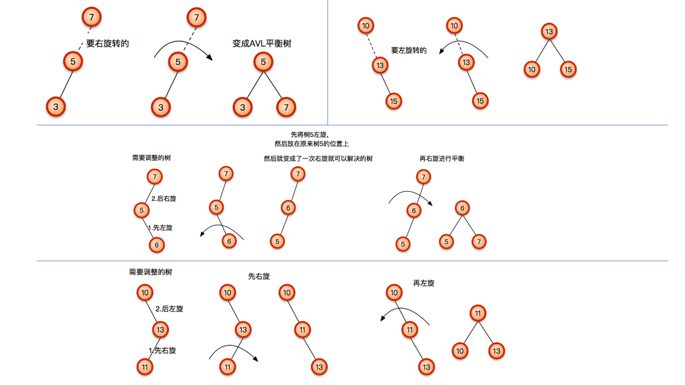
B-树
m-路搜索树
- 在m路搜索树中，每个内部节点可以有多达m个子树。它有以下特性：
- 每个节点最多有m个子树。
- 除根节点和叶子节点外，每个节点至少有m / 2个子树。
- 所有叶子节点都在同一层次上。
- 在m路搜索树中，每个内部节点可以有多达m个子树。它有以下特性：
B-树：平衡的m-路搜索树
查找：
- 从根节点开始： 从B树的根节点开始，逐级向下搜索。
- 在节点中查找关键字： 在当前节点中查找目标关键字。如果目标关键字等于当前节点中的某个关键字，则查找成功，返回相应的信息或指针。
- 选择子树： 如果目标关键字小于当前节点中的所有关键字，选择当前节点的第一个子树。如果目标关键字大于当前节点中的某个关键字，选择该关键字右侧的子树。
- 递归： 递归地在所选择的子树上执行查找操作，回到步骤2。
- 叶子节点： 如果当前节点是叶子节点，表示到达了树的底部，但仍未找到目标关键字。查找失败，返回相应的提示或空值。
插入（假设为3阶B-树）
- 首先与查找操作一样，找到待插入节点
- 若目标插入节点关键字数量小于2（m - 1），直接插入
- 若目标插入节点关键字数量已经为2进行分裂
- 分裂：分裂的规则是该结点分成两半，将中间的关键字进行提升，加入到父亲结点中，但是这又可能存在父亲结点也满员的情况，则不得不向上进行回溯，甚至是要对根结点进行分裂，那么整棵树都加了一层。
- 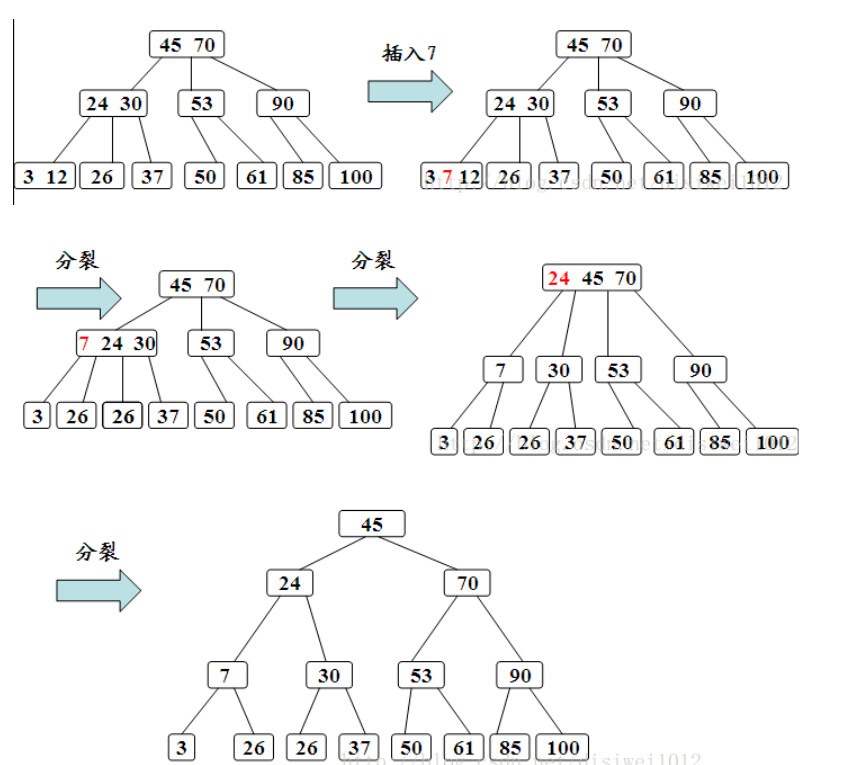
删除
若该节点删除前关键字个数大于m / 2，直接删除
若该节点关键字个数等于m / 2，即删除后不满足B-树要求，按从左到右顺序从相邻的兄弟节点借一个数据
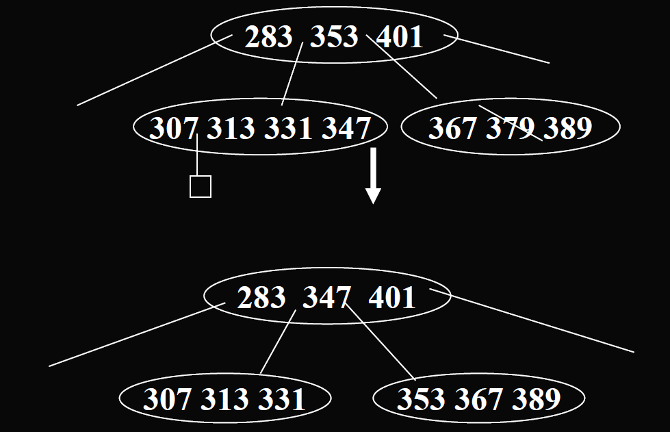若相邻兄弟节点关键字个数为m / 2，则将两个节点合并（把父节点里根位置关键字也合并进来），若此过程使父节点也不满足B-树定义，递归向上进行
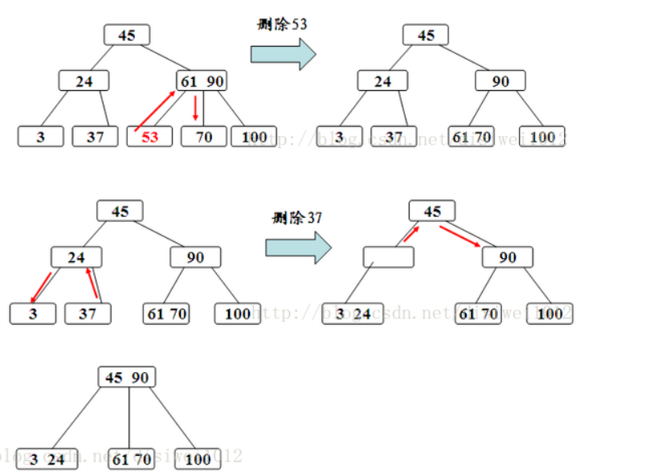
第五章 散列表
- 装载因子
- 定义：装载因子（Load Factor）是哈希表中用于衡量已经存储的元素数量与哈希表容量之比的一个指标，表示为：Load Factor = 哈希表容量已存储的元素数量 / 哈希表容量
- 装载因子大于1碰撞概率大，小于1碰撞概率小
散列函数
取余法：
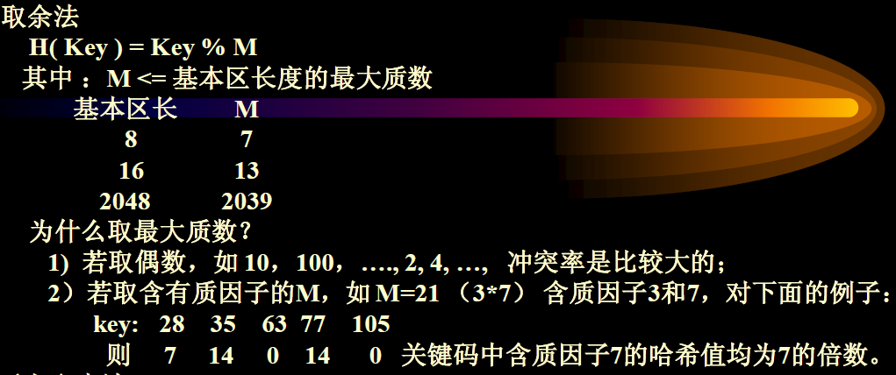平方取中法
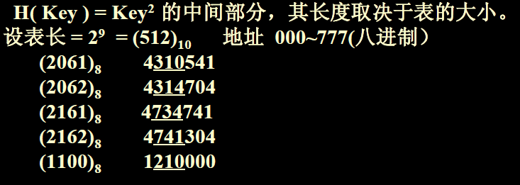乘法杂凑法：使用[M * ( k * A % 1) ]作为哈希地址，其中A是一个在0和1之间的常数。
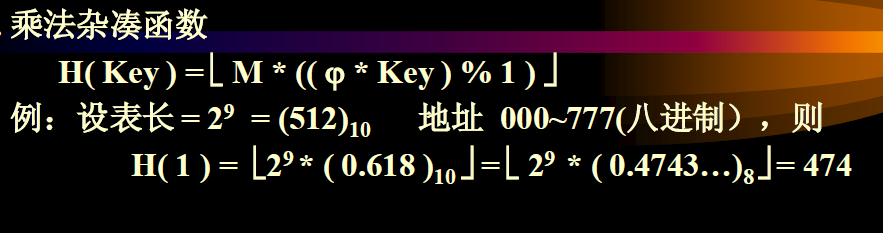
碰撞解决
- 线性探测
- 插入元素时若检测到哈希表该位置已被占据，hash(key) = d，则依次检测d + 1，d + 2 ··· m - 1，0 ··· d - 1号位置，若检测到空闲，则占据该位置
- 简单地说就是从原位置沿数组找第一个空位置插入
- 二次探测
- 插入元素时若检测到哈希表该位置已被占据，hash(key) = d，则依次检测d + 1，d + 4，d + 9··· 号位置，若检测到空闲，则占据该位置
- 双哈希
- 使用两个独立的哈希函数来计算下一个探测位置。这两个哈希函数分别为h1(key)和h2(key)
- 若发生冲突，探测d + c, d + 2c, d + 3c······号位置
- 再散列：当哈希表中的元素数量达到一定阈值时，再散列会触发，引发哈希表的重新构建。主要步骤：
- 创建新的哈希表： 当哈希表中的元素数量达到一定的阈值（例如，装载因子超过某个预定的阈值），再散列会创建一个新的更大的哈希表。
- 重新哈希： 将哈希表中的所有元素重新插入到新的哈希表中。这个过程会使用新的哈希函数，通常是一个更大的哈希表大小对应的函数。
- 替换原有哈希表： 重新哈希完成后，新的哈希表替换了原有的哈希表，成为存储元素的主要数据结构。
- 分离链接
- 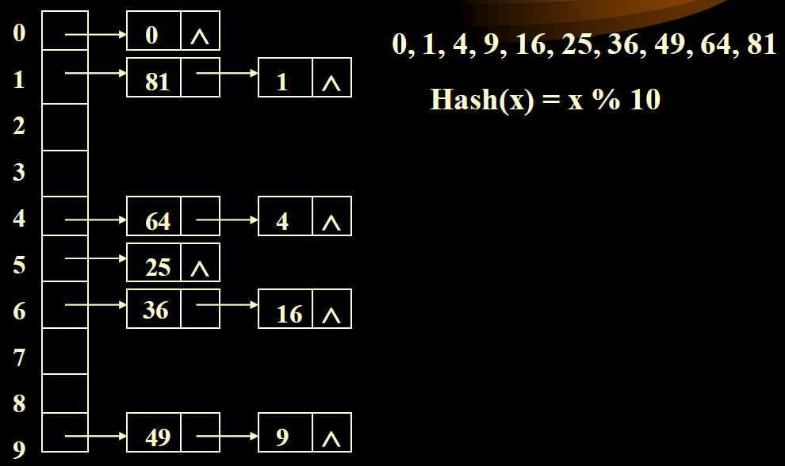
第六章 优先级队列（堆）
- 定义
- 类似于普通的队列或堆栈，但是每个元素都关联有一个优先级。在优先级队列中，元素按照其优先级被处理，而不是按照插入的顺序。
- 查找、删除最高优先级的叫最大优先级队列，反之称为最小优先级队列
堆
定义：一个最大（小）堆是所有节点值都比其孩子节点值大（小）的完全二叉树
插入：新插入的元素插在堆的最后，若插入后不满足最大（小）堆的要求，向上调整，即不断交换
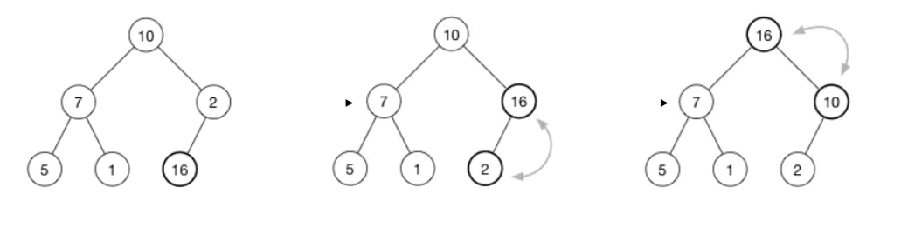删除：堆只能删除顶部元素，删除后将底部元素提到顶部，再从上向下调整（例：若为最大堆则每次选择两个孩子中更大的进行交换）
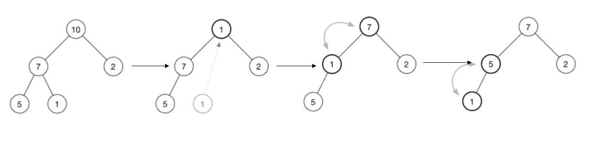方法：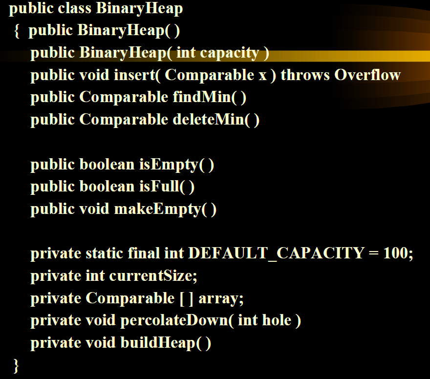
向下调整算法建堆
向下调整算法：如图，以下二叉树经过以下步骤转换为大堆
- 选出孩子节点中大的值大的与父结点比较，如孩子节点大于父结点则交换，如小于则停止。
- 持续向下比较，比较到叶子结点或者孩子结点小于父结点则停止。
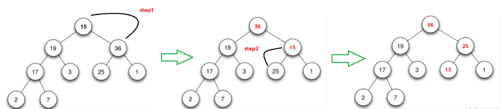
从后向前建堆：找到数组最后一个元素的父节点，为图中编号为1的子树，从后向前执行向下调整算法。
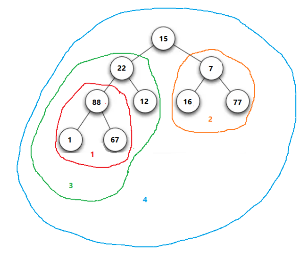
向上调整算法建堆
向上调整算法建堆的过程与向下调整算法相似，从下标为1（即顶部）的结点开始向后调整：
- 如孩子节点大于父结点就进行交换，直到与根结点比较完毕。
- 如孩子节点小于父节点也停止调整，让下一结点进行调整。
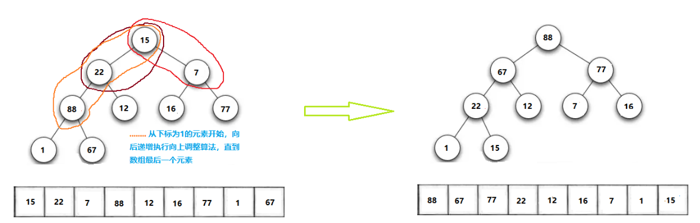
堆排序
- 第一步：将给定数据按顺序建成完全二叉树，然后调整成最大堆（从小到大排序用最大堆，从大到小排序用最小堆）
- 第二步：堆分为有序区和无序区，每次把无序区的最后一个元素与堆顶元素交换，此时有序区扩增，然后对无序区进行向下调整让它重新成为最大（小）堆
- 重复进行第二步直到排序完成
1
2
3
4
5
6
7
8
9
10
11
12
13
14
15
16
17
18
19
20
21
22
23
24
25
26
27
28
29
30
31
32
33
34
35public static void heapsort(Comparable[] a) {
for (int i = a.length / 2; i >= 1; i--) {
percDown(a, i, a.length);
}
for (int i = a.length; i > 1; i--) {
swapReferences(a, 1, i);
percDown(a, 1, i - 1);
}
}
private static void percDown(Comparable[] a, int i, int n) {
int child;
Comparable tmp;
for (tmp = a[i]; leftChild(i) < n; i = child) {
child = leftChild(i);
if (child != n - 1 && a[child].compareTo(a[child + 1]) < 0) {
child++;
}
if (tmp.compareTo(a[child]) < 0) {
a[i] = a[child];
} else {
break;
}
}
a[i] = tmp;
}
private static int leftChild(int i) {
return 2 * i + 1;
}
第七章 并查集
等价类：指集合中的元素按照某个等价关系被划分成若干个子集，其中每个子集内的元素在这个等价关系下是相互等价的。一个等价关系是满足以下三个性质的关系：自反性、对称性、传递性
并查集定义：用于处理集合的数据结构，主要用于解决元素的等价关系和集合合并的问题。每个元素都被分配一个唯一的标识符，并且每个集合由一棵树来表示，其中树的根节点是集合的代表元素。
操作
- find(e)：在并查集中寻找e
- union(a, b)：将a、b两个等价类合并，通常把其中一个的根节点连到另一个的根节点上
- combine(a, b)：i=Find(a)；j=Find(b)；if(i != j) Union(i, j)；
实现：每个等价类取出一个代表元素作为根，其他元素按层级结构作为孩子
- 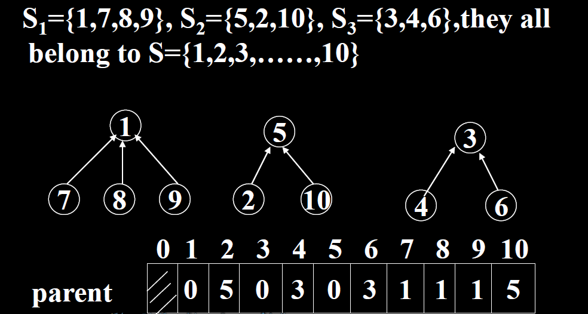
int Find(int e){
while(parent[e])
e = parent[e];
return e;
}void Union(int i, int j){
parent[j]=i;
}
1
2
3
4
5
6
7
8
9
10
11
12
13
14
15
16
17
18
19
20
21
22
23
24
25
26
27
28
29
30
31
32
33
34
35
36
37
- 时间复杂度：find->O(h)，union->θ(1)
+ union算法的提升
- 重量规则：将树中节点多的根作为合并后的新根
- 高度规则：将树高更高的根节点作为合并后的新根，用一个数组实现，根结点中放负数，绝对值代表高度
````c++
//重量规则
void Initialize(int n) {
root = new bool[n + 1];//指示该节点是否为根
parent = new int[n + 1];//存放树节点个数
for (int e = 1; e <= n; e++) {
parent[e] = 1;
root[e] = true;
}
}
int Find(int e) {
while (!root[e]) {
e = parent[e];
}
return e;
}
void Union(int i, int j) {
if (parent[i] < parent[j]) { // i becomes subtree of j
parent[j] = parent[j] + parent[i];
root[i] = false;
parent[i] = j;
} else {
parent[i] = parent[i] + parent[j];
root[j] = false;
parent[j] = i;
}
}1
2
3
4
5
6
7
8
9
10
11//高度规则
public void union(int root1, int root2) {
if (s[root2] < s[root1]) {
s[root1] = root2;
} else {
if (s[root1] == s[root2]) {
s[root1] = root2;
s[root2] = root1;
}
}
}find的提升：路径压缩
1
2
3
4
5int find(int e){
if(parent[e] == e){return e;}
return parent[e] = find(parent[e]);
}
//第一次find没有压缩，以后的都压缩过了
第八章 图
概念
定义：Graph=(V, E)；V：非空有限点集；E：边集合
- 无向图：边(v1, v2) = (v2, v1)
- 有向图与无向图相反
完全图：有n个点和n * (n - 1) / 2条边的无向图（有向图n * (n - 1)条边），即每个点都和其他点直接相连
度
- 入度：以该点为终点的边的条数
- 出度：以该点为起点的边的条数
- 对无向图，度就是节点连接的边的条数
子图：V’ 包含于V，E’ 包含于E，则(V’, E’)为(V, e)的子图
简单路径与简单回路：一个简单路径是指图中不包含重复节点的路径，简单回路是起始点相同的简单路径
连通图
- 一个图是连通图，如果图中的任意两个节点之间存在至少一条路径
- 一个有向图是强连通图，如果图中的任意两个节点之间存在双向路径
连通分量
- 一个图的连通分量是指图中的一个最大连通子图
- 强连通分量是指有向图中的一个极大强连通子图，即一个最大的子图，其中任意两个节点都是强连通的。
权重图：边上带有权值，表示对象之间的关系具有权重。
网络：连通的权重图和子图
生成树：无环连通图的一种特殊子图。对于一个连通图 G，它的生成树是 G 的一个子图，包含了图中的所有节点，并使得这个子图是一个树（无环连通图）。
生成树有以下特性：
- 包含了图中的所有节点。
- 是一个树，即无环连通图。
- 保留了原图中的边，但是边的数量是节点数减一。
方法：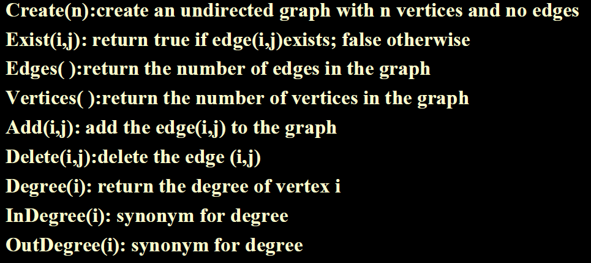
邻接矩阵（Adjacency Matrix）： 用二维数组表示节点之间的关系，矩阵中的元素表示边的存在或权值。
- aij = 1表示存在(i, j)这条边
- 无向图的邻接矩阵是对称矩阵
- 若图为网络（权重图），则将0换为∞，1换为权重
邻接表
- 如果边的数量少，使用邻接表可以减少内存消耗
- 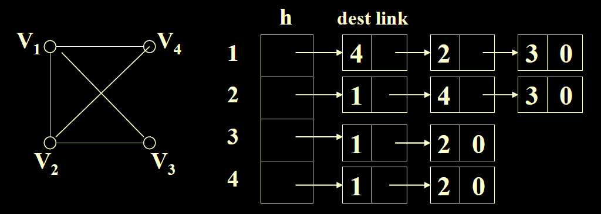
- 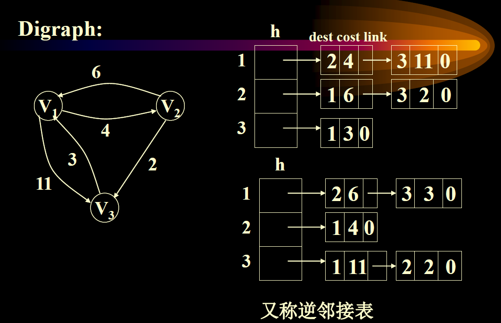
图的遍历
深度优先遍历 DFS
沿着图的深度尽可能远的方式遍历图的节点，直到无法再继续前进为止，然后回溯到之前的节点，继续探索其他路径。
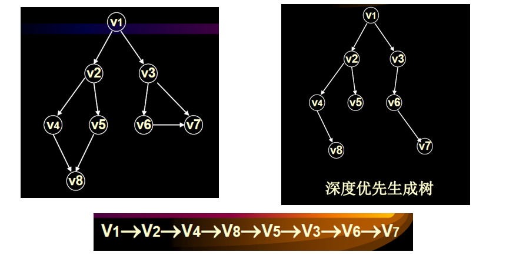步骤：
- 选择一个起始节点作为当前节点。
- 访问当前节点，并标记为已访问。
- 对当前节点的每个邻接节点，如果该邻接节点未被访问，递归地应用 DFS。
- 若该节点向下的邻接节点都已被访问，返回到上一步，继续对其他未访问的节点应用 DFS。
使用辅助数组visited[]实现
广度优先遍历
- 思想：从图中某顶点v0出发，在访问了v0之后依次访问v0的各个未曾访问过的邻接点，然后分别从这些邻接点出发广度优先遍历图，直至图中所有顶点都被访问到为止
- 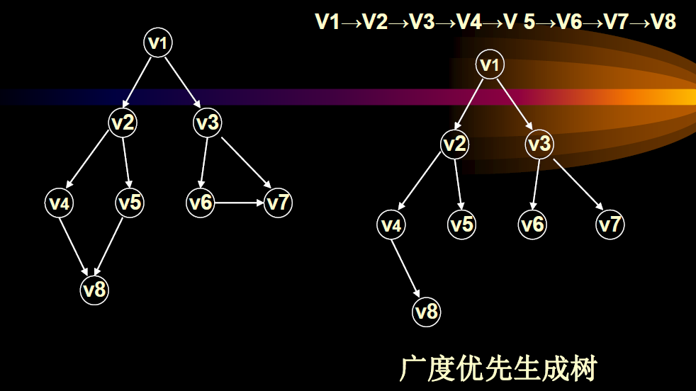
- 使用辅助数组visited[]实现
连通分量
- 当无向图(以无向图为例)为非连通图时，从图的某一顶点出发进行遍历(深度/广度)只能访问到该顶点所在的最大连通子图(即连通分量)的所有顶点
- 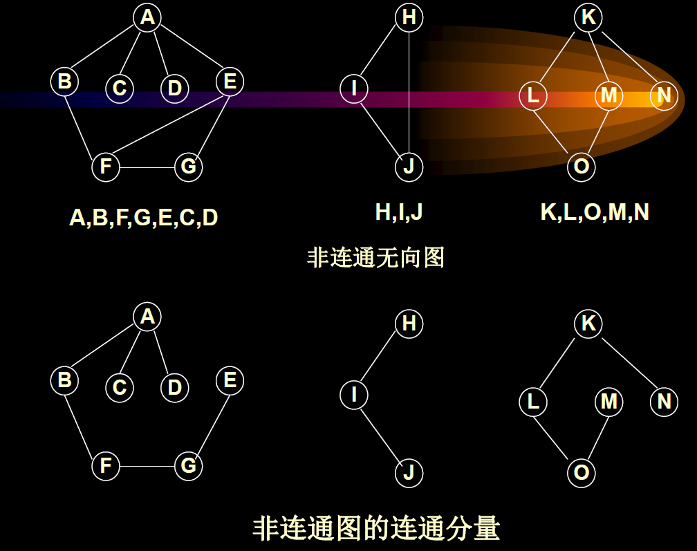
最小生成树
最小代价生成树：各边权的总和为最小的生成树
逐步求解(Grandy)策略：
- 设：连通网络
N={V,E}, V 中有 n 个顶点。- 先构造 n 个顶点， 0 条边的森林 F={T0 ,T1 ,…..,Tn-1}
- 每次向 F 中加入一条边。该边是一端在 F 的某棵树Ti上而另一端不在Ti上的所有边中具有最小权值的边。这样使F中两棵树合并为一棵，树的棵数 - 1
- 重复n - 1次
- 设：连通网络
Kruskal算法
- 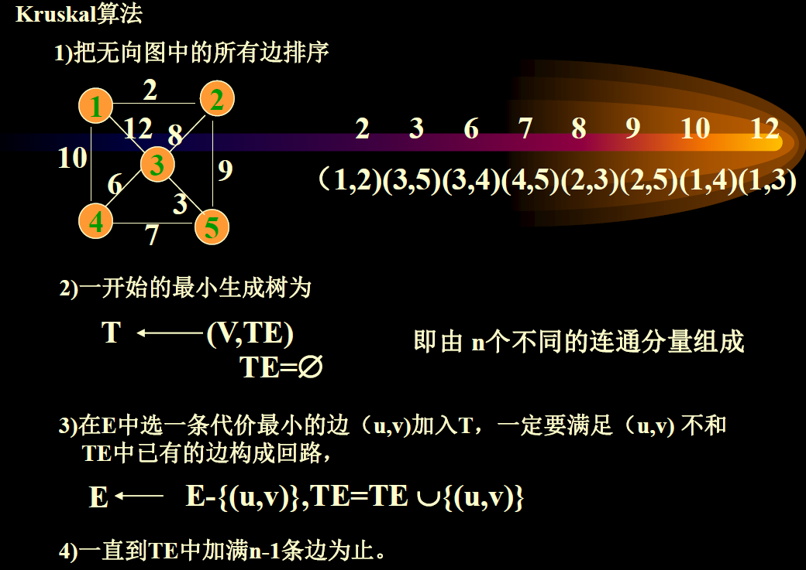
图用邻接矩阵表示，顶点信息在顶点表Verticelist中，取最小的边利用最小堆
1
2
3
4
5
6
7
8
9
10
11
12
13
14
15
16
17
18
19
20
21
22
23
24
25
26
27
28public void kruskal() {
int edgesAccepted;
DisjSet s;
PriorityQueue h;
Vertex u, v;
SetType uset, vset;
Edge e;
// 从图中读取边并构建最小堆
h = readGraphIntoHeapArray();
h.buildHeap();
// 初始化并查集和边的数量
s = new DisjSet(NUM_VERTICES);
edgesAccepted = 0;
// 循环直到生成树中的边数量达到 NUM_VERTICES - 1
while (edgesAccepted < NUM_VERTICES - 1) {
// 从最小堆中取出权值最小的边
e = h.deleteMin(); // Edge e = (u, v)
// 查找边两端节点所在的集合
uset = s.find(u);
vset = s.find(v);
// 如果两个节点不在同一集合，说明加入这条边不会形成环
if (uset != vset) {
edgesAccepted++;
// 合并两个点集合
s.union(uset, vset);
}
}
}
Prim算法
- 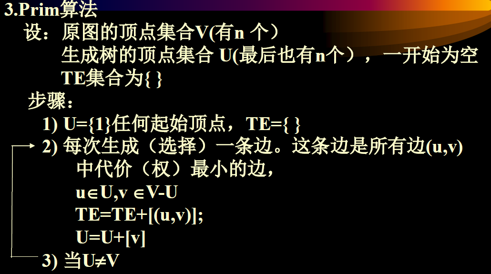
- 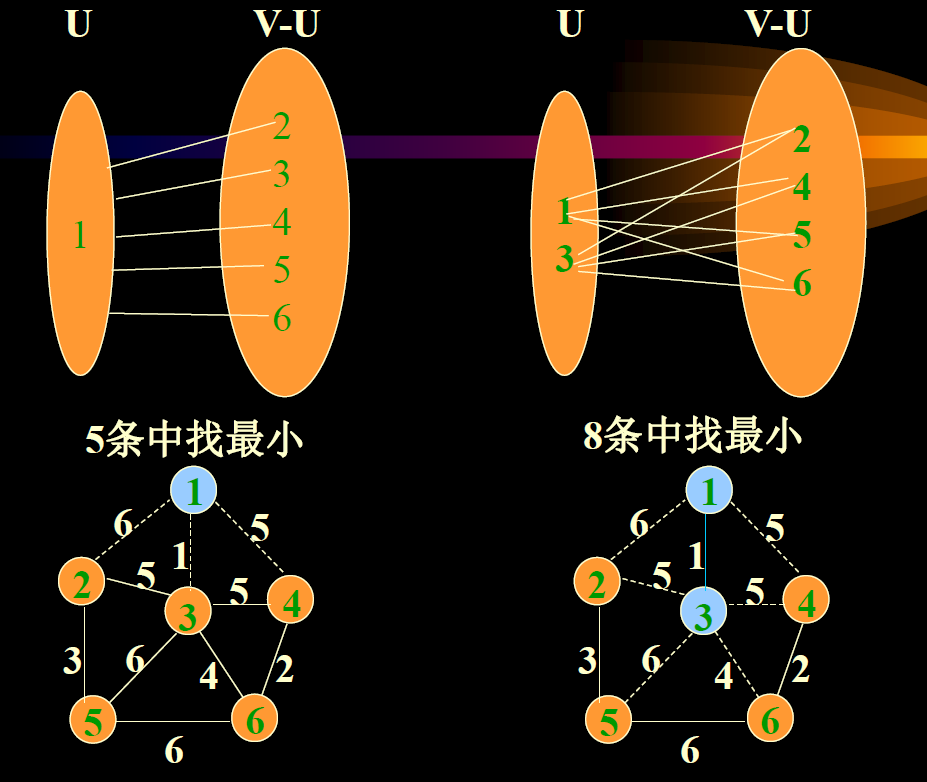
- 算法实现
- 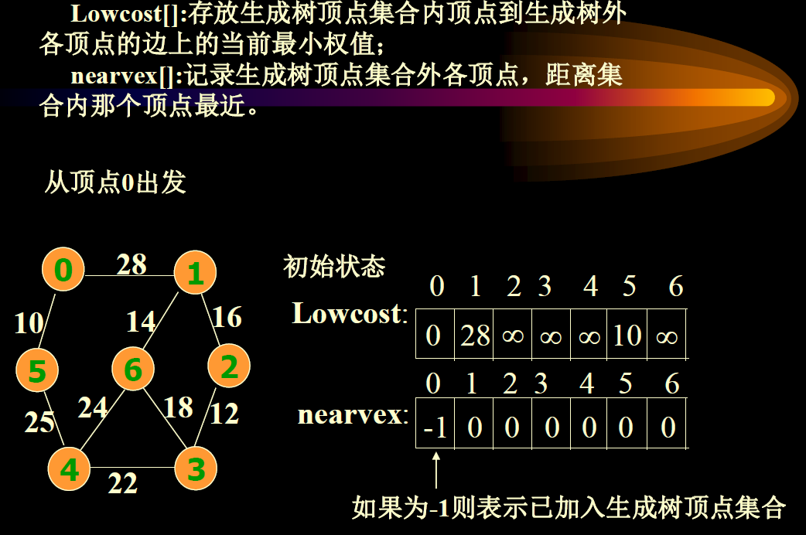
- 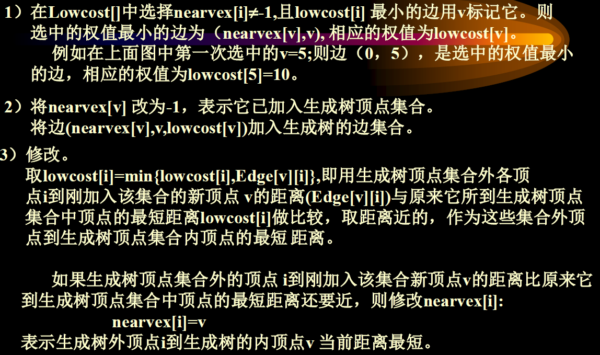
最短路径
含非负权值的单源最短路径(Dijkstra)
目标：得到指定点V0到所有其他点的最短路径
第一步：先排出V0点到所有目标点的直接路径（不可达用∞）
第二步：从中挑出最短的那一条，放入结果区，即V0到该点最短路径
第三步：根据新加入结果区的那一条路径更新路径表（比较取短的）
重复以上步骤n - 1次即可得到结果
- 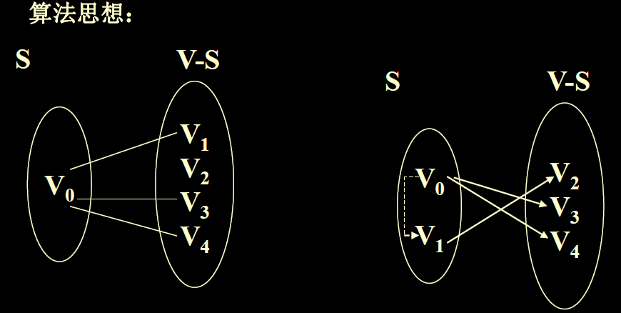
边上权值为任意值的单源最短路径（贝尔曼-福特）
目标：在边上权值可以为负数的情况下，寻找指定点V0到所有其他点的最短路径
算法内容：构造一个最短路径长度数组，dist 1[u]，dist 2[u]，···，dist n-1[u]，其中dist k[u]表示从V0出发最多经过k条边到达终点u的最短路径长度，并且不允许负权重边参与构成回路
递推公式：dist 1[u]=Edge[v] [u] ;
[dist k[u] = min{dist k-1[u] , min{dist k-1[j] + Edge[j] [u] } } {j = 0,1,2,…,n - 1}
- 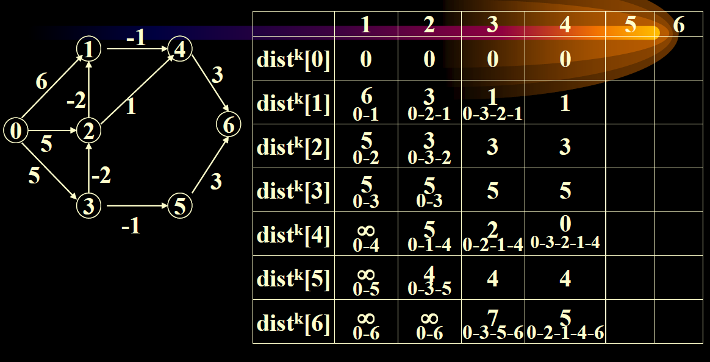
所有顶点之间的最短路径(Floyed)
- 前提：各边权值均大于0的带权有向图。
- 算法内容：
- 设A为原邻接矩阵，在A上作n次迭代，设每次迭代结果分别为A1，A2······An
- 迭代方法（自己理解的）：对于An，取矩阵An-1的第n行和第n列为基准，对于aij（基准行列上的可以剔除），用以它为中心的十字与基准行列交叉得到两个数据相加，若结果小于当前的aij，则更新aij
- 最后得到的An对应的path矩阵aij对应i->j最短路径的 j 前最后一个点
活动网络
用顶点表示活动的网络（AOV网络）
- 用顶点表示活动，用弧表示活动间的优先关系的有向图称为AOV网
- 直接前驱、直接后继：<i,j> 是网中一条弧，则 i 是 j 的直接前驱，j是 i 的直接后继
- 前驱、后继：从顶点 i 到顶点 j 有一条有向路径，则称 i 是 j 的 前驱，j 是 i 的后继
- 不能出现有向环
- 有向图G=(V,E),V 里结点的线性序列（vi1 ,vi2 ,…,vin）如果满足：在 G 中从结点vi 到vj 有一条路径，则序列中结点vi 必先于结点vj，称这样的线性序列为一拓扑序列。
- 拓扑排序：求拓扑序列
- 从图中选择一个入度为 0 的结点输出之。（如果一个图中，同时存在多个入度为0的结点，则随便输出哪一个结点）
- 从图中删掉此结点及其所有的出边。
- 反复执行以上步骤，直到所有结点都输出了，则算法结束；如果图中还有结点，但入度不为 0 ，则说明有环路
用边表示活动的网络（AOE网络）
顶点：表示事件(event)，它的入边代表的活动已完成，它的出边代表的活动可以开始
有向边：表示活动，边上的权表示完成一项活动需要的时间
有唯一的入度为0的开始结点，唯一的出度为0的完成结点
关键路径（Critical Path）： 是指由一系列关键活动组成的路径，即具有从开始顶点(源点)->完成顶点(汇点)的最长的路径，其总持续时间等于项目的最短完成时间。
找关键活动算法中一些量的定义
- Ve[i]：表示事件 V i 的可能最早发生时间，定义为从源点V0到Vi 的最长路径长度 , 如 Ve[4]=7 天
- Vl[i]：表示事件 Vi 的允许的最晚发生时间。是在保证汇点Vn-1在Ve[n-1] 时刻完成的前提下，事件
Vi允许发生的最晚时间＝ Ve[n-1] - Vi到Vn-1的最长路径长度。 - 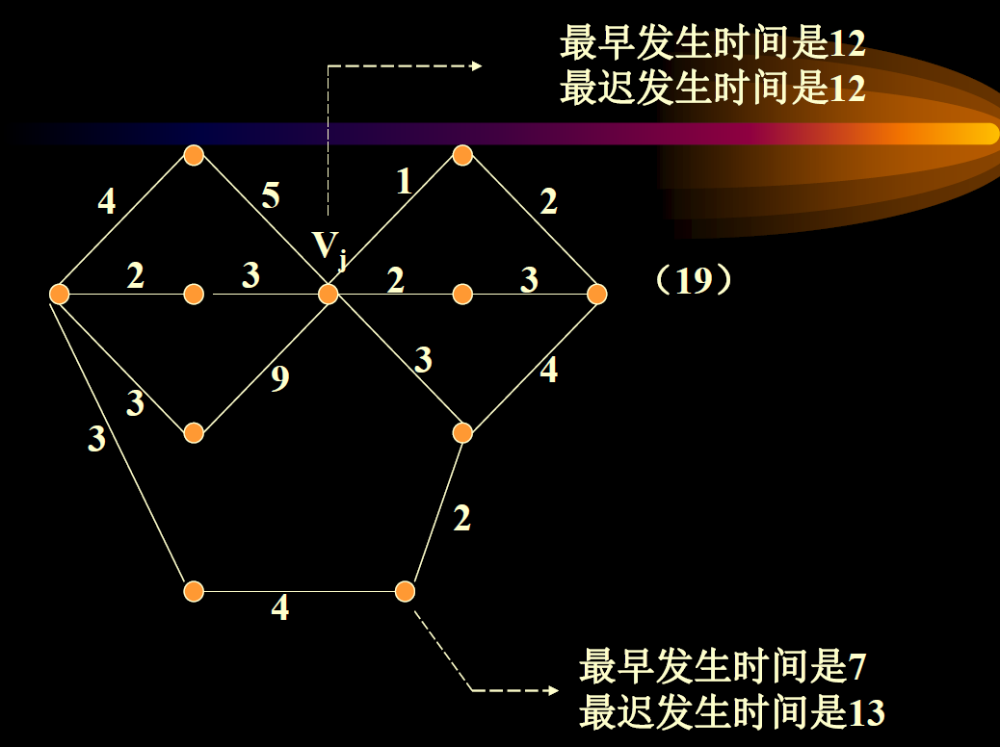
- e[k]：表示活动 ak = <Vi, Vj> 的可能的最早开始时间。即等于事件Vi 的可能最早发生时间。e[k]=Ve[i]
- l [k]：表示活动 ak = <Vi, Vj> 的允许的最迟开始时间。l[k] = Vl [j] - <i, j>
- e[k] - l [k]表示活动ak的最早可能开始时间和最迟允许开始时间的时间余量。也称为松弛时间
- 若松弛时间为0，则ak为关键事件
找关键活动算法步骤
求各事件的可能最早发生时间：从Ve[0]=0开始，向前推进求其它事件的Ve
（Ve[i] = max{ Ve[j] + dur(<Vj ,Vi >) }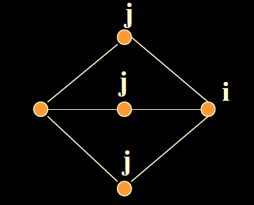
求各事件的允许最晚发生时间：从Vl [n-1] = Ve[n-1]开始，反向递推
Vl [i]=min{ Vl[j] - dur (<Vi ,Vj >) } 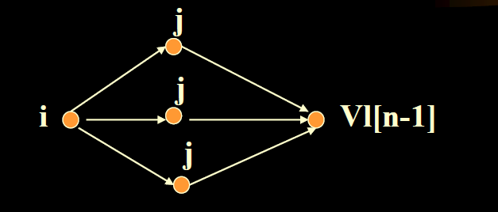
求e[k]和l [k]，若e[k] = l [k]则ak为关键活动
排序算法
概述
- 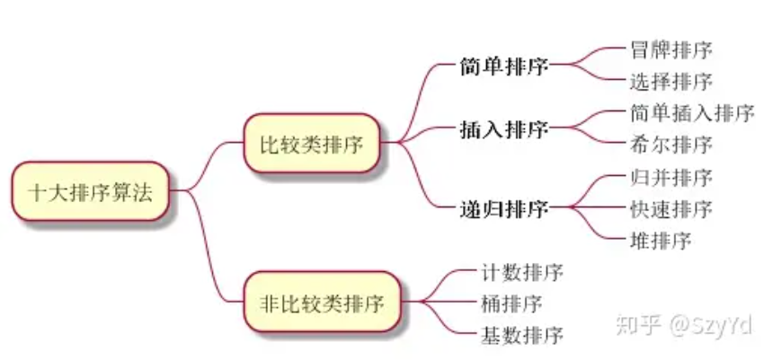
- 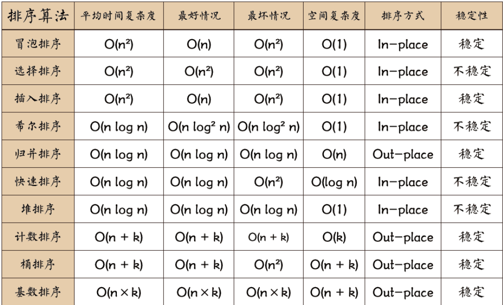
- 分类
- 内排序：对内存中的 n 个对象进行排序 。(插入排序，交换排序，选择排序，归并排序，基数排序)
- 外排序：内存放不下，还要使用外存的排序。
- 稳定性：如果待排序的对象序列中，含有多个关键码值相等的对象，用某种方法排序后，这些对象的相对次序是不变的，则是稳定的，否则为不稳定
- 算法分析：
- 时间开销：比较次数 + 移动次数
- 所需的附加空间
插入排序
- 直接插入排序：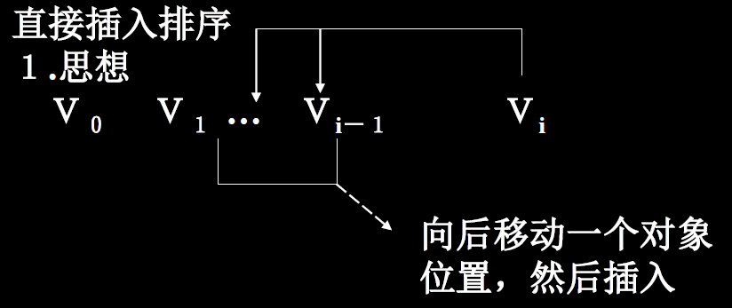
- 最优：原数据按大小顺序排列，比较次数n - 1，移动次数0
- 最差：原数据按大小逆序排列，比较次数1 + 2 + ··· + n - 1 = O(n^2)，移动次数(1 + 2) + ··· + (n - 1 + 2) = O(n^2)
折半插入排序不考- 对于已排序的部分，使用二分查找的方法，将插入位置的搜索范围缩小一半，从而提高排序的效率。
- O(n * log2 n)
- 希尔排序
- 取一增量（间隔 gap<n ），按增量分组，对每组使用直接插入排序或其他方法进行排序。
- 减少增量（分的组减少，但每组记录增多）。直至增量为1，即为一个组时。
- 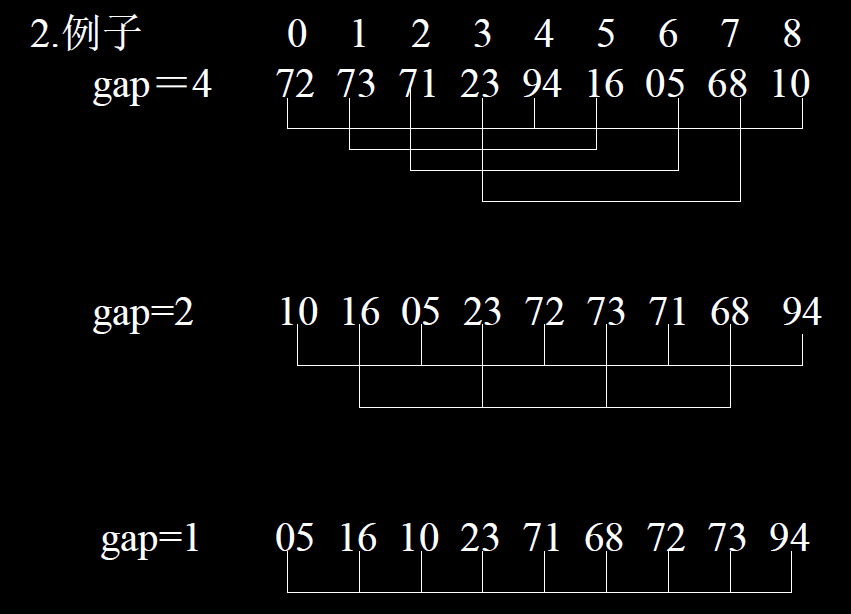
- 算法分析：与选择的缩小增量有关，但到目前还不知如何选择最好结果的缩小增量序列。
交换排序
- 冒泡排序
- 从头到尾做一遍相邻两元素的比较有颠倒则交换，记下交换的位置。一趟结束，一个或多个最大(小)元素定位。
- 去掉已定位的的元素，重复上一步，直至一趟无交换。
- 算法分析：最优n-1 次比较，0次移动；最差：(n - 1) + (n - 2) + ··· + 1次比较和交换
- 快速排序 重要
- 在 n 个对象中，取一个对象(如第一个对象 -> 基准pivot),按该对象的关键码把所有<=该关键码的对象分划在它的左边。> 该关键码的对象分划在它的右边。
- 对左边和右边（子序列）分别再用快速排序。
- - j指针一直左移，直到它指的数比i指的数(基准)小，然后交换i、j所指数，i右移一位，继续该过程 - 当i、j相遇，本轮快排完成
- 算法分析
- 平均时间复杂度：O(n * log2 n)
选择排序
- 直接选择排序
- 思想：首先在n个记录中选出关键码最小（最大）的记录，然后与第一个记录（最后第n 个记录）交换位置，再在其余的n-1 个记录中选关键码最小（最大）的记录，然后与第二个记录（第n-1个记录）交换位置，直至选择了n-1个记录。
- 比较次数：n - 1 + n - 2 + ··· + 1 =n * (n - 1) / 2=O(n^2)
- 堆排序
- 思想：第一步，建堆，根据初始输入数据，利用堆的调整算法，形成初始堆。第二步，一系列的对象交换和重新调整堆
- 算法分析：调整n - 1次(FilterDown)，时间为 O(n * log2 n)；交换次数为2n次，时间为O(n)；总复杂度为O(n * log2 n)
归并排序
步骤
- 分解（Divide）： 将待排序的序列分解成两个子序列，通常是平均划分。这一步鼓励递归的应用，直到每个子序列只有一个元素。
- 解决（Conquer）： 递归地对每个子序列进行排序。当子序列长度为1时，它已经是有序的。
- 合并（Combine）： 将已排序的子序列合并成一个新的有序序列。这是归并排序的关键步骤。
算法分析：合并趟数 log 2 n, 每趟比较 n 次，所以为 O(n log2 n)
1
2
3
4
5
6
7
8
9
10
11
12
13
14
15
16
17
18
19
20
21
22
23
24
25
26
27
28
29
30
31
32
33
34
35
36
37
38
39public static void mergeSort(Comparable[] a) {
Comparable[] tmpArray = new Comparable[a.length];
mergeSort(a, tmpArray, 0, a.length - 1);
}
private static void mergeSort(Comparable[] a, Comparable[] tmpArray, int left, int right) {
if (left < right) {
int center = (left + right) / 2;
mergeSort(a, tmpArray, left, center);
mergeSort(a, tmpArray, center + 1, right);
merge(a, tmpArray, left, center + 1, right);
}
}
private static void merge(Comparable[] a, Comparable[] tmpArray, int leftPos, int rightPos, int rightEnd) {
int leftEnd = rightPos - 1;
int tmpPos = leftPos;
int numElements = rightEnd - leftPos + 1;
while (leftPos <= leftEnd && rightPos <= rightEnd) {
if (a[leftPos].compareTo(a[rightPos]) <= 0) {
tmpArray[tmpPos++] = a[leftPos++];
} else {
tmpArray[tmpPos++] = a[rightPos++];
}
}
while (leftPos <= leftEnd) {
tmpArray[tmpPos++] = a[leftPos++];
}
while (rightPos <= rightEnd) {
tmpArray[tmpPos++] = a[rightPos++];
}
for (int i = 0; i < numElements; i++, rightEnd--) {
a[rightEnd] = tmpArray[rightEnd];
}
}